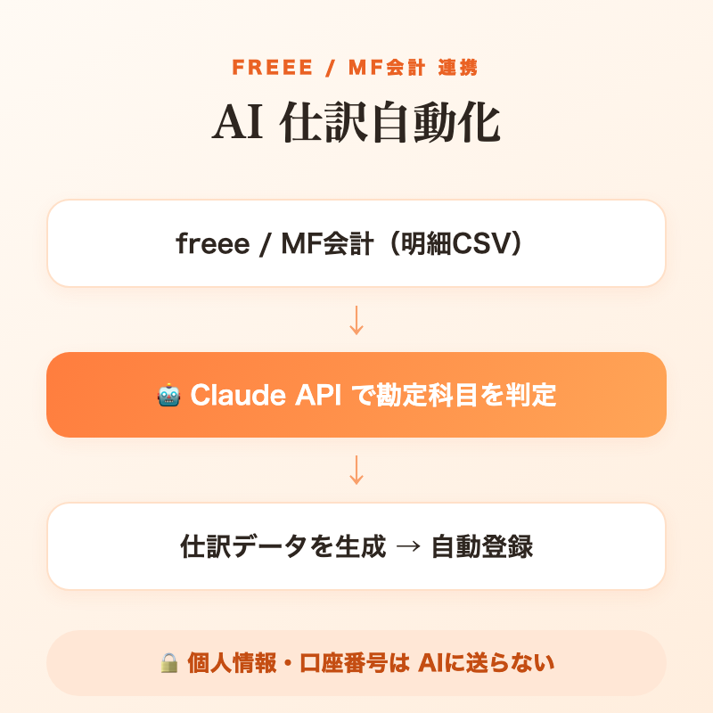

AIで、動くしくみを。
SHOKEI — AI DEVELOPMENT PORTFOLIO
SCROLL
SHOKEI — AI DEVELOPMENT PORTFOLIO
わたしのこと
はじめまして、大久保翔啓です。AIといっしょに、めんどうな作業を「自動で動くしくみ」に変えるのが好きです。
とくに得意なのは、データを深く読み解く分析——「なぜ伸びるのか」「何が効いているのか」まで、数字で根拠を示します。
わかったことは気軽に共有していきたいので、気になることがあれば、いつでも声をかけてください。
数字とグラフで示す
「なぜ伸びるのか」「何が効いているのか」まで、データを深く掘り下げて分析します。見ただけで伝わる数字とグラフにして、根拠をはっきり示すのが得意です。
自動で回るようにする
一回きりの作業で終わらせず、毎日ひとりでに動くしくみにします。手を止めても回り続ける仕組みづくりが得意です。
AIと一緒につくる
AIを相棒にして、考えるところから作り上げるところまで一緒に進めます。アイデアを「実際に動くもの」にします。
4つの強み

FEATURE 01
ライバルのアカウント情報を毎朝自動で集めて、人気の度合いを点数にし、表（スプレッドシート）に書き込むところまで全部自動。急に伸びたアカウントを見つけ出すのも自動です。アカウント名は黒塗りで非公開にしています。

FEATURE 02
どんな編集の動画が伸びるかを機械学習（AI）で予測し、SHAP（予測の理由の見える化）で効いている要素を分析。カットの速さ・大きな字幕・つかみの長さ・明るさが効果的だと分かりました。感覚ではなくデータで語れます。

FEATURE 03
タイタニックの乗客データで「生き残るか」を予測。データの前処理から予測、答え合わせ（正解率 約81%）、どの情報が効いたかの可視化まで。流行りものだけでなく、基礎をきちんと自分の手で固めています。
FEATURE 04
freee / マネーフォワード会計の明細を読み込み、1件ずつClaude APIで勘定科目を判定 → 仕訳データを自動生成してCSVで登録まで。マイナンバー・口座番号・パスワードはAIに送らない「データフロー設計」で、機密情報を物理的にブロック。実務で使える、安全性に配慮したAI自動化です。
作ったもの


お知らせ
概要
| NAME | 大久保 翔啓 / Shokei — AI Development Portfolio |
|---|---|
| FOCUS | AIを使った自動化と、データ分析・機械学習 |
| STACK | Claude Code / Python / pandas・scikit-learn / matplotlib・seaborn / HTML・CSS・JavaScript |
| DOING | AI開発を学びながら、実際に動くものを制作中 |
| CONTACT | ohkubo3creator@gmail.com |